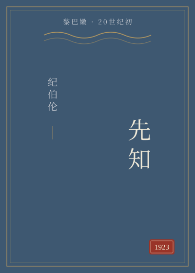
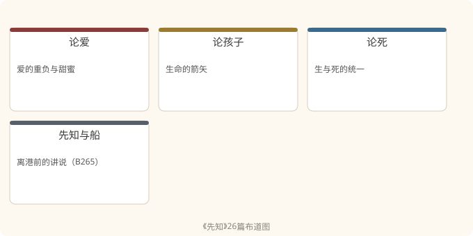

先知
一、基本信息
| 作者 | 纪伯伦 |
|---|---|
| 成书/出版 | 1923年出版（Britannica：published in 1923） The Prophet (by Gibran) — Encyclopaedia Britannica（百科全书） |
| 国别/地区 | 黎巴嫩 |
| 时代 | 近代 · 20世纪初 |
| 体裁 | 散文诗集 |
| 语言 | 英语 |

《先知》26篇布道图（主题·结构图）
二、创作背景
Britannica（B265）：'a book of 26 poetic essays'——先知阿穆斯塔法在离港前被市民拦下，'about the mysteries of life'（谈生命的奥秘）：'love, marriage, beauty, reason and passion, and death'。
影响（B265）：'a best-selling book of popular mysticism……reached cult status among American youth for generations'；'translated into more than a dozen languages'。
作者风格（B264）：'highly romantic in outlook and was influenced by the Bible, Friedrich Nietzsche, and William Blake'。
三、内容脉络
先知与船：离港前的26篇布道——爱、婚姻、孩子、施与、劳作、欢乐与悲哀（篇目通说待核）。
四、主要人物表
| 人物 | 身份 | 说明 |
|---|---|---|
| 阿穆斯塔法 | 先知 | 布道者（通说待核） |
五、主题与艺术特点
- '奥秘的讲说'（B265：mysteries of life）。
- 爱与自由的箴言体（通说）。
- 东方神秘主义与《圣经》修辞（B264 语境）。
六、影响与评论
- Britannica：'reached cult status among American youth for generations'（B265）。
The Prophet (by Gibran) — Encyclopaedia Britannica（百科全书） - Britannica：'translated into more than a dozen languages'（B265）。
The Prophet (by Gibran) — Encyclopaedia Britannica（百科全书）
七、阅读建议
难点
- 箴言的断片式阅读。
- 圣经体的节奏。
- 冰心译《先知·沙与沫》（译林出版社/人民文学出版社，通说待核）。
- 英文原版（公有领域渐近）。
先《论爱》《论孩子》→ 通读。
八、待核实
- 26篇篇目核对。
- 冰心译本信息核对。
- 先知名（Almustafa）核对。
本页主要来源
- The Prophet (by Gibran) — Encyclopaedia Britannica（百科全书）
- Khalil Gibran — Encyclopaedia Britannica（百科全书）
纪伯伦的其他收录作品：先知